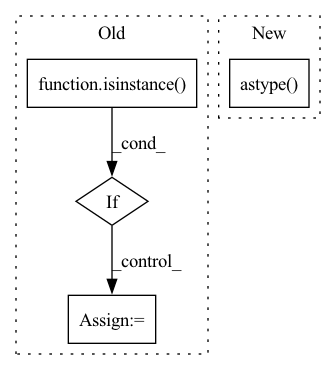

Pattern ID :33786
Before Change
starting_point: Optional[np.ndarray] = None,
) -> np.ndarray:
if population_init_strategy == PopulationInitStrategy.UNIFORM:
if isinstance( self.env.single_action_space, Discrete) :
self.population = np.random.randint(
self.env.single_action_space.n, size=(self.population_size,)
)
else:After Change
// Discretize and clip population as needed
if isinstance(self.env.single_action_space, (Discrete, MultiDiscrete)):
population = np.round(population).astype( np.int32)
self.population = np.clip(
population, self.action_space_range[0], self.action_space_range[1]
)
In pattern: SUPERPATTERN
Frequency: 4
Non-data size: 4
Instances Fragment ID: 97014762
Project Name: londonnode/pearl
Commit Name: b45f6db9dc5a26737e913c41c09f13e188d78b09
Time: 2021-11-30
Author: rohan.tangri@gmail.com
File Name: anvilrl/updaters/random_search.py
M Class Name: GeneticUpdater
N Class Name: GeneticUpdater
M Method Name: initialize_population(4)
N Method Name: initialize_population(4)
M Parent Class: BaseSearchUpdater
N Parent Class: BaseSearchUpdater
M File Name: anvilrl/updaters/random_search.py
N File Name: anvilrl/updaters/random_search.py
M Start Line: 163
M End Line: 192
N Start Line: 165
N End Line: 189
Before Change
def random_contrast(self, image):
if isinstance( image, np.ndarray) :
image = Image.fromarray(image)
image = self.colorjitter_contrast(image)
image = np.asarray(image)//to numpy
image = np.clip(image, 0, 255)After Change
mean = image.mean()
image = (image-mean)*contrast_factor+mean
image = np.clip(image, 0, 255.)
return image.astype( np.float32)
def additive_shade(self, image):
nb_ellipses = self.config["params"]["additive_shade"]["nb_ellipses"]
transparency_range = self.config["params"]["additive_shade"]["transparency_range"] Fragment ID: 97014765
Project Name: shaofengzeng/superpoint-pytorch
Commit Name: 265137dadde08f144a97d48b3323ccc8b0ed7c76
Time: 2021-11-29
Author: shaofengzeng@163.com
File Name: dataset/utils/photometric_augmentation.py
M Class Name: PhotoAugmentor
N Class Name: PhotoAugmentor
M Method Name: random_contrast(2)
N Method Name: random_contrast(2)
M Parent Class:
N Parent Class:
M File Name: dataset/utils/photometric_augmentation.py
N File Name: dataset/utils/photometric_augmentation.py
M Start Line: 65
M End Line: 70
N Start Line: 79
N End Line: 85
Before Change
return self._state()
def step(self, act):
if isinstance( act, np.ndarray) :
act = int(act)
reward, done = self.env.act(act)
return self._state(), reward, done, {}
After Change
def step(self, act):
reward, done = self.env.act(act)
state = self.env.state().astype( np.uint8)
return state, reward, done, {}
@property
def num_channels(self): Fragment ID: 97014766
Project Name: jakegrigsby/super_sac
Commit Name: c5acbe613911f6924b70f68bde3d1f350aef47df
Time: 2021-10-01
Author: jcg6dn@virginia.edu
File Name: experiments/minatr/minatar_utils.py
M Class Name: MinAtarEnv
N Class Name: MinAtarEnv
M Method Name: step(2)
N Method Name: step(2)
M Parent Class: gym.Wrapper
N Parent Class:
M File Name: experiments/minatr/minatar_utils.py
N File Name: experiments/minatr/minatar_utils.py
M Start Line: 24
M End Line: 27
N Start Line: 26
N End Line: 27
Before Change
def random_brightness(self, image):
if isinstance( image, np.ndarray) :
image = Image.fromarray(image)
image = self.colorjitter_brightness(image)
image = np.asarray(image)//to numpy
image = np.clip(image, 0, 255)After Change
delta = np.random.uniform(low=-self.brightness_max_change,high=self.brightness_max_change, size=1)[0]
image = image + delta
image = np.clip(image, 0, 255.0)
return image.astype( np.float32)
def random_contrast(self, image):
// if not isinstance(image.dtype, np.uint8): Fragment ID: 97014769
Project Name: shaofengzeng/superpoint-pytorch
Commit Name: 265137dadde08f144a97d48b3323ccc8b0ed7c76
Time: 2021-11-29
Author: shaofengzeng@163.com
File Name: dataset/utils/photometric_augmentation.py
M Class Name: PhotoAugmentor
N Class Name: PhotoAugmentor
M Method Name: random_brightness(2)
N Method Name: random_brightness(2)
M Parent Class:
N Parent Class:
M File Name: dataset/utils/photometric_augmentation.py
N File Name: dataset/utils/photometric_augmentation.py
M Start Line: 56
M End Line: 61
N Start Line: 65
N End Line: 68